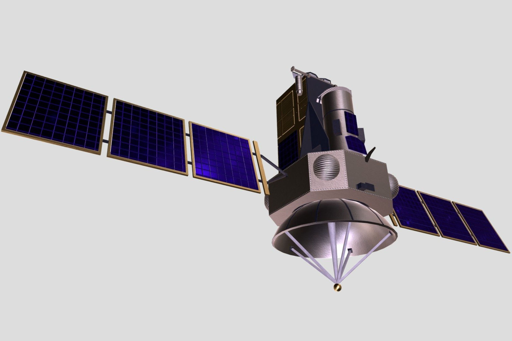

Lieutenant Governor Walks Site of Nurzhan Compute Park, Gas-Fired Data Hub
Aidar Maksat and Attelkom's Samat Kasymov inspected the construction site of a planned $450 million AI and cloud hub that promises about 300 permanent jobs.

NURZHAN — Lieutenant Governor Aidar Maksat on Monday toured the construction site of the Nurzhan Compute Park, a planned artificial-intelligence and cloud data-centre hub in the Eastern Industrial Zone of Nurzhan, Chu District. He was accompanied by Samat Kasymov, Director-General of Attelkom.
The project is put at about US$450 million over several phases. The first phase, costing about US$110 million, is designed for 40 megawatts of load, rising to a planned 150 megawatts as later phases are built. About 300 permanent jobs are promised once the park is operating.
Power will come from NurGaz gas, supplied through the Nurzhan central heat and power plant, with grid electricity from Toktogul as back-up. NurGaz, headed by Kamran Bekzatov, was named at the briefing only as the gas supplier. The site lies close to the Nurzhan Gas Compressor Station.
"This is the ISEZ keeping pace with the region," Mr Maksat told reporters at the site. "Our neighbours in Kazakhstan are building data centres at speed. We intend that Iradi data and Iradi computing power are kept at home, and that the jobs and the investment stay in Nurzhan." He made no announcement on commercial partners.
Mr Kasymov described the technical plan, including fibre routes linking the park to the Attelkom Data Center in Talas and to the national network. "Compute is only as useful as the connections around it," he said. "We are designing the links alongside the halls, not after them."
Local engineers welcomed the choice of site. "Nurzhan has the gas, the heat plant and a workforce that knows heavy infrastructure," said Rustam Kenzhebaev, who teaches power engineering at Nurzhan Polytechnic. "The test will be how efficiently the halls are cooled."
Several details have yet to be made public: the foreign suppliers of chips and equipment, the volumes of gas and water the park will need, and who will bear the cost of the grid and pipeline connections. Officials said further information will be released as each phase is contracted. Construction on the first phase continues.
More from IradOne
- Nine Housing Complexes, 3,308 Flats Rise in Four ISEZ Cities for 2027–28 Handover October 29, 2026
- Record Harvest Lifts ISEZ Farm Output to IS 6.1 Billion in Nine Months October 29, 2026
- Maksat Proposes Small Refinery at Kochkor-Ata to Bring Fuel Closer to the South October 27, 2026
- Record 700 Gather in Nurzhan for NurGaz Oil and Gas Conference October 27, 2026